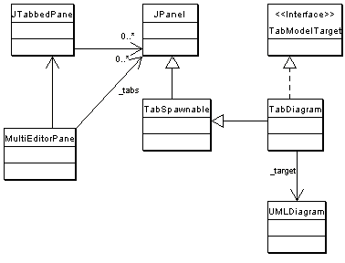

- Purpose
- To present the diagrams to the user and allow the user to manipulate the diagrams through the view.
- Located
org.argouml.uml.diagram
- Layer
Used sybsystems
This subsystem uses the following other subsystems:
Design of the subsystem
The classes in this subsystem are extensions of the GEF base classes (GraphModels, Figs, Selections etc) together with some supporting classes.
This subsystem has no direct access to a specific implementation of the OMG model repository. However it does update such a repository via the interface of the Model Subsystem.
There is an intention (Bob Tarling) to split this subsystem into several smaller subsystems, one for each diagram type. This is to allow for indiviual diagram reuse by other applications and to allow us to fast track developers onto a specific subproject containing that subsystem (Michael MacDonald and sequence diagrams in mind).
Class diagram of the class/package diagram figures (project file)
{kind=link}
Design of the Figs
The Coordinate system
All coordinates used by the Figs from GEF are specified in a device-independent coordinate system called User Space. The low level drawing code converts these coordinates from user space to device-dependent coordinates in Device Space. Coordinates in device space usually refer to individual device pixels and are aligned on the infinitely thin gaps between these pixels.
See the JavaDoc of the Graphics2D class for more information.
The origin of the User Space coordinate system maps to the upper left hand corner of the target region of the device with increasing X coordinates extending to the right and increasing Y coordinates extending downward.
Line widths
Line widths are included in the size of the Fig.
In the following, we use:
(x, y) |
the top left coordinate |
w |
the width of the box |
h |
the height of the box |
This means that e.g. the dimensions of a box are its outside dimensions, and inside it, there is an area filled with the fill color that has the following dimension:
- width : w - 2 * lineWidth height : h - 2 * lineWidth
The line color is used to draw the border around the before mentioned box. There are 4 line segments drawn, of which the top horizontal one goes from:
- (x + linewidth / 2, y + linewidth / 2)
to:
- (x + w - linewidth, y + linewidth / 2)
This because the width of the line extends on both sides of the infinitesimal narrow line between the same end points.
Multi editor pane
The multi editor pane is the pane with the diagram editor in it. Normally it is placed in the upper right corner of the application. One of the feature requests is to make the pane dockable so maybe it won't be there in the future.
The multi editor pane consists of tabs that hold editors as you can see in the class diagram.

At the moment there is only one editor tab in place. This is the TabDiagram that shows an UMLDiagram, the target.
The target of the MultiEditorPane is set via the setTarget method of the pane. This method is called by the setTarget method of the ProjectBrowser. The pane's setTarget method will call each setTarget method of each tab that is an instance of TabModelTarget. Besides setting the target of the tabs, the setTarget method also calls MultiEditorPane.select(Object o). This selects the new target on a tab. This probably belongs in the setTarget method of the individual tabs and diagrams but that's how it's implemented at the moment.
How do I ...?
...add a new tab to the MultiEditorPane?
Create a new class that's a child of JPanel and put the following line in argo.ini:
- multi: fully classified name of new tab class
How do I add a new element to a diagram?
To add a new element to a diagram, two main things have to be done.
Create new Fig classes to represent the element on the diagram and add them to the graph model (org.argouml.uml.diagram.xxxx.XxxxDiagramGraphModel.java) and renderer (org.argouml.uml.diagram.xxxx.ui.XxxxDiagramRenderer.java).
Create a new property panel class that will be displayed in the property tab window on the details pane. This is described in <<Subsystem>> Property panels.
Throughout we shall use the example of adding the UML Extend relationship to a use case diagram. This allows two Use Cases to be joined by a dotted arrow labeled «extend» to show that one extends the behavior of the other.
The classes involved in this particular example have all been well commented and have full Javadoc descriptions, to help when examining the code. You will need to read the description here in conjunction with looking at the code.
How to add a new Fig
The new item must be added to the tool-bar. Both the graph model and diagram renderer for the diagram will need modifying for any new fig object.
Adding to the tool-bar of the diagram
Find the diagram object in uml/diagram/XXXX/ui/UMLYYYYDiagram.java, where XXXX is the diagram type (lower case) and YYYY the diagram type (bumpy caps). For example uml/diagram/use_case/ui/UMLUseCaseDiagram.java. This will be a subclass of UMLDiagram (in uml/diagram/ui/UMLDiagram.java).
Each tool-bar action is declared as a private static field of class Action, initiated as a new CmdCreateNode (for nodal UML elements) or a new CmdSetMode (for behavior, or creation of line UML elements). These classes are part of the GEF library.
The common ones (select, broom, graphic annotations) are inherited from UMLDiagram, the diagram specific ones in the class itself. For example in UMLUseCaseDiagram.java we have the following for creating Use Case nodes.
private static Action actionUseCase;
which is then created as follows:
protected Action getActionUseCase() {
if (actionUseCase == null) {
actionUseCase = new RadioAction(new CmdCreateNode(
Model.getMetaTypes().getUseCase(), "button.new-usecase"));
}
return actionUseCase;
}
The first argument of the CmdCreateNode() function is the class of the node to create from the <<Subsystem>> Model Metatypes interface, the second a textual tool tip.
The tool-bar is actually created by defining a method, UMLDiagram.initToolBar() which adds the tools in turn to the tool-bar (a private member named toolBar).
The default constructor for the diagram is declared public, despite that it must not be called directly - it is needed for loading projects from files. The desired constructor takes a name-space as an argument, and sets up a graph model (UseCaseDiagramGraphModel), layer perspective and renderer (UseCaseDigramRenderer) for nodes and edges.
Changing the graph model
The graph model is the bridge between the UML meta-model representation of the design and the graph model of GEF. They are found in the parent directory of the corresponding diagram class, and have the general name YYYYDiagramGraphModel.java, where YYYY is the diagram name in bumpy caps. For example the use case diagram graph model is in uml/diagram/use_case/UseCaseDiagramGraphModel.java
The graph model is defined as UMLMutableGraphSupport, a child of the GEF class MutableGraphSupport, and should implement MutableGraphModel (GEF).
Changing the renderer
The renderer is responsible for creating graphic figs as required on the diagram. It is found in the same directory of the corresponding diagram class, and has the general name YYYYDiagramRenderer.java, where YYYY is the diagram name in bumpy caps. For example the use case diagram graph model is in uml/diagram/use_case/ui/UseCaseDiagramRenderer.java
This provides two routines, getFigNodeFor(), which provides a fig object to represent a given UML node object and getFigEdgeFor(), which provides a fig object to represent a given UML edge object.
In our example, we must extend getFigEdgeFor() so it can handle UML Extend objects (producing a FigExtend).
Creating a new Fig
Assuming you have your model element already defined in the UML model and your PropPanel for that model element, you should make the Fig class.
New objects that are to appear on a diagram will require new Fig classes to represent them. They are placed in the same directory as the diagram that uses them.
Nodes that are Figs that are closed figures like FigClass, extend from FigNodeModelElement. Edges that are lines like FigAssociation, extend from FigEdgeModelElement. The name of the Fig has to start with (yes indeed) Fig. The rest of the name should be equal to the model element name.
The implementation of a Fig must provide one constructor with as parameter the owner, the bounds (only if the fig has dimensions, i.e. if it is a node), and DiagramSettings for its rendering. In the constructor, you draw the lines and text fields, and add them by calling addFig(Fig) in the sequence of layering: the one on the top should be added last. See FigActionState and FigAssociation for an example of this.
Create a NotationProvider for the UML language, and overrule the method getNotationProviderType in the new Fig to define its usage. This allows the "name" to be rendered and edited. BTW: There is no reason why this should be limited to a name - e.g. FigTransition uses this for something else.
If you have more than one text field that can be edited, override the method textEditStarted(FigText text) and textEdited(FigText text). This latter method is called AFTER the user edited the text. In this method the edited text is parsed. If the parsing is simple and not Notation specific, just do it in textEdited. But for most cases: use the <<Subsystem>> Notation, see e.g. FigState.
Make an Action that can be called from the GUI. If you are lucky, you just can use CmdCreateNode. See for examples UMLClassDiagram of using CmdCreateNode.
Adapt the method canAddEdge(Object o) on subclasses of GraphModel if you are building an edge so it will return true if the edge may be added to the subclass. Subclasses are for example ClassDiagramGraphModel and UseCaseDiagramGraphModel. If you are building a node, adapt canAddNode(Object o).
Adapt the method getFigEdgeFor on implementors of GraphEdgeRenderer if you are implementing an edge so it will return the correct FigEdge for your object. If you are implementing a node, adapt the method getFigNodeFor on implementors of GraphNodeRenderer. In ArgoUML classes like ClassDiagramRenderer implement these interfaces.
Add an image file for the buttons to the resource directory org/argouml/Images. This image file must be of GIF format and have a drawing of the button image to be used in itself. Its dimensions shall be 16x16. This image is also used on the PropPanel. The name of the Image file should be model element.gif.
Add buttons to the action you created on those places in the GUI that have a need for it. This should be at least the button bar in each diagram where you can draw your model element. Probably the parent of your model element (e.g. class in case of operation) will want a button too, so add it to the PropPanel of the parent. In case of the diagrams, add it in UMLdiagram.java, so in UMLClassDiagram if it belongs there. In case of the PropPanels, use UndoableAction. Also, the right-click pop-up menu of the parent Fig on the diagram is a good location to add the Action.